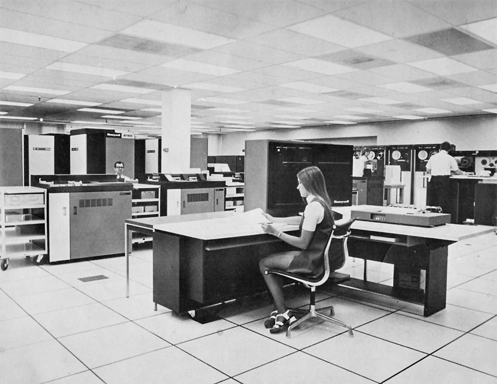

Loading
1. Background
According to George Snively, Homer (Barney) Oldfield of
GE built a computer department to support the  ERMA contract with Bank of America in 1956.
ERMA contract with Bank of America in 1956.
 Phoenix was chosen as the location.
The Deer Valley plant was built in Phoenix in 1958 to ship the ERMA systems.
(Joe Weizenbaum worked on ERMA software, and later introduced GE to Project MAC.)
Phoenix was chosen as the location.
The Deer Valley plant was built in Phoenix in 1958 to ship the ERMA systems.
(Joe Weizenbaum worked on ERMA software, and later introduced GE to Project MAC.)
GE large systems hardware was built in Phoenix, starting with the GE-225 and then the GE-635.
 The Core of the Black Canyon Computer Corporation, IEEE Annals of the History of Computing Vol. 17, No. 4: Winter 1995, pp. 56-60 has John Couleur's recollections of the GE-635, John Weil, and Ed Vance.
The 635 group moved to Phoenix in 1964.
The GE Large Systems department moved to Phoenix from Syracuse NY in 1968.
Ed Thelen wrote about the history of the
The Core of the Black Canyon Computer Corporation, IEEE Annals of the History of Computing Vol. 17, No. 4: Winter 1995, pp. 56-60 has John Couleur's recollections of the GE-635, John Weil, and Ed Vance.
The 635 group moved to Phoenix in 1964.
The GE Large Systems department moved to Phoenix from Syracuse NY in 1968.
Ed Thelen wrote about the history of the  Early GE Computers.
The GE-645 Multics CPU was based on the 635.
Early GE Computers.
The GE-645 Multics CPU was based on the 635.
Honeywell bought the GE computer division in 1970.
This event was called "The Merger."
It is described in J.A.N. Lee's  The Rise and Fall of the General Electric Corporation Computer Department, IEEE Annals of the History of Computing Vol. 17, No. 4: Winter 1995, pp. 24-45. 1995.
See "Shangri-La and the Paris 645" by Jean Bellec,
and Dick Hill's "Honeywell Management".
The Rise and Fall of the General Electric Corporation Computer Department, IEEE Annals of the History of Computing Vol. 17, No. 4: Winter 1995, pp. 24-45. 1995.
See "Shangri-La and the Paris 645" by Jean Bellec,
and Dick Hill's "Honeywell Management".
Honeywell Information Systems merged with Bull to create Bull HN Information Systems in 1988. Bull canceled Multics development and moved maintenance to Calgary in 1989.
2. Phoenix Multics Development Center (PMDC)
The Honeywell Phoenix Multics Development Center was created in 1973 at the Camelback Road Facility (CRF), Camelback Road & Black Canyon Freeway, Phoenix, AZ, USA. A prototype 6090 system was installed at CRF in 1972, and the name "6180" was announced in 1973.
1973 Computerworld article about dedication of a new Honeywell Multics center in Phoenix (Thanks to Jerry Saltzer.)

System M computer room, early 1970s; 6180 system, Betti Blank in foreground; more pictures at 6180 Pictures
In Visiting CISL, Ron Riedesel wrote "I think it was May of 1974 that we carried the first Multics system tapes to Phoenix to start up the local service there on System M."
[Gary Dixon (GCD)] System M was run by the Multics Computer Center (MCC) organization and supported time-sharing access to System M for
- Multics developers in Phoenix, Cambridge, and later Calgary
- Site Analysts and other Multics team members world wide
- General Honeywell application use
- Multics benchmarks
Honeywell Multics users accessed System M by dialing into Tymnet and Honeywell Voice Network (HVN).
CISL had a Tymnet multiplexer in its phone room so that users could avoid using HVN to access System M.
The local info file  tymnet.info for System M gives connection details and rates for Tymnet as of 1978.
tymnet.info for System M gives connection details and rates for Tymnet as of 1978.
[GCD] New versions of system software were exposed on System M after they had been checked out at CISL and MIT. The System M service was also used for final packaging and tape generation for MR releases.
Customer support for Multics included managing Multics Trouble Reports and developing special communications software.
The project to get Multics certified as a B2 system by the NCSC involved work by Multicians at many locations. At PMDC, the B2 project included functional test development, thorough testing of the release on System M, system documentation (MDD series), new release procedures, and ongoing testing and security audit to endure that later changes remained secure. Gary Dixon was the designated NSA Vendor Security Analyst for maintaining the B2 rating.
[GCD] System MB was the part of System M that was used for benchmark support. CPUs and other resources could be switched from one machine to the other, allowing benchmark development while service was running, and then making a big configuration for actual benchmark runs.
3. Timeline, Locations and Moves
| TYPE | YEAR | LSTYLE | HEIGHT | TEXT | TSTYLE |
|---|---|---|---|---|---|
| back | 1955 | #dddddd | 1970 | GE | |
| back | 1970 | #ffdddd | 1989 | Honeywell | |
| back | 1989 | #eeeeee | 1995 | Bull | |
| axis | 1955 | ||||
| axis | 1970 | ||||
| axis | 1980 | ||||
| axis | 1989 | ||||
| axis | 1995 | ||||
| data | 1958 | 1 | GE ERMA|DVCP | italic 9pt serif | |
| data | 1964 | 2 | GE 635 | bold 9pt sans-serif | |
| data | 1967 | 3 | GE 645 | bold 9pt sans-serif | |
| data | 1970 | 6 | Merger | ||
| data | 1972 | 1 | Sys-M|Installed | ||
| data | 1972 | 3 | H6180 | bold 9pt sans-serif | |
| data | 1972 | 5 | PMDC|at CRF | ||
| data | 1975 | 2 | USGS|bm | ||
| data | 1978 | 2 | Avon|bm | ||
| data | 1979 | 4 | EOP|bm | ||
| data | 1982 | 2 | STC|bm | ||
| data | 1982 | 5 | PMDC to|DVCP | ||
| data | 1982 | 2 | STC|bm | ||
| data | 1984 | 1 | RAE|bm | ||
| data | 1986 | 3 | Multics|dev|canceled | ||
| data | 1989 | 5 | PMDC|closed | ||
| data | 1993 | 1 | Sys-M|shutdown |
3.1 Deer Valley Computer Park (DVCP)
In 1971, Honeywell won a very large contract for GCOS systems for the World Wide Military Command and Control System (WWMCCS), which required a plant that could produce about one 635 mainframe a day. These computer systems were built in Deer Valley Computer Park (DVCP), as were Multics systems. The DVCP plant was located at Thunderbird Rd. and Black Canyon Freeway.
[GCD] DVCP provided manufacturing floor space; hardware test cells, where finished computers were tested before delivery; test platform space (including environmental test labs, etc) including separate labs for measuring operating temperature ranges, electrical and sound pollution properties, etc; demo centers for GCOS systems; offices for LISD executives; and Office space for many GCOS software development teams, and later teams for some CP-6 people, and the Multics team.
[GCD] The DVCP cafeteria was on the north end of the main plant. It included a dedicated dining room for executives, breakfast meetings with larger teams, customer visitors, etc; with menus and a waitress service delivering food from the cafeteria line. Main cafeteria had regular lines of long cafeteria-style tables, a long serving bar for hot foods, a separate salad bar, etc.
[Olin SIbert (WOS), Nov 2002] I drove by the former Deer Valley Computer Park, and discovered that it has been converted (in part) into luxury apartments! The "new software building" still has a Bull sign, but the rest of the facility is long since re-used (there's a Fry's--grocery, I think--and some other mixed-use commercial, but the apartments were what really tickled me).
3.2 Camelback Road Facility
[GCD] Camelback Road Facility (CRF) was a re-use of a very-large CostCo-like "box" store that went out of business. It was located seven miles south of DVCP. System-M machines were housed there during years I worked in Phoenix (1977 to 1988) only until the move to NSB (see below); and the customer demo center for Multics was adjacent to (contained within, as a glass-walled room called the "fishbowl") the System-M machine room. I think CRF was de-commissioned by Bull around 1987. The building became an Indoor Swap Mart.
[Frank Martinson FWM] I do not recall there being any demos after the final move of System M. SysAdmin was adjacent to the lab space near System M.
[GCD] The CRF cafeteria was on the north side of the box building.. Most food was prepared there by a dedicated staff; some was trucked in from the larger DVCP kitchens.

The former CRF building, with the Indoor Swap Mart sign on it. Photo by Anthony Nemmer, Sept 2003. Click for a larger view.

[FWM] One of my fond remembrances of our Multics Phoenix is how we were considered radicals and got away with it. Honeywell was very straight laced and had a hard time dealing with we radical Multicians. At one time in the 1970s, Norm Feldman, the general manager before Dick Douglas, was a stickler people for getting to work on time (7:15). He personally would check which groups came go work on time, standing on the 2nd story roof of DVCP taking names of people arriving late to work. The best groups were awarded a trophy for number one and close-in parking privileges. A trophy was also awarded for the group that had the worst on time arrival: that group then had to park in the furthest-away part of the parking lot. The Multics group was proud to always, without exception, win the booby prize trophy for being the latest to work. Funny that nobody ever counted how late in the day or night we worked.
[THVV] When I worked at CRF in 1979, Multics developers usually dressed informally at CRF, compared to the jacket and tie most folks wore at DVCP.
[PWB, Oct 2012] The CRF property, which has been home to the Indoor Swap Mart for several years, has been sold to Grand Canyon University, which itself is located about a mile west at 35th Avenue and Camelback.
3.3 Corporate Center
[GCD] Corporate Center: the office building across the Black Canyon Freeway from the Deer Valley plant (and 3/4 mile south of Thunderbird) provided temporary office space for a variety of LISD teams, at various times. Such offices sometimes included mini-infrastructure computers for those teams (as in FNPs/DPS-6 systems for comm teams). This was never true for the Multics team, however. Access to System-M was via dedicated phone lines between Corporate Center and System-M.
[GCD] While the Multics team was at Corporate Center offices, lunch was usually to one of the several restaurants in the Corporate Center complex.. A lunch wagon usually came to these office blocks, and served sandwiches, chilli and soups, etc; we sometimes had lunch there. Sometimes, a group would trek over to the CRF cafeteria, especially on days when green-chili burros were being served. The cook at CRF had her own special recipe; and the resulting product was a masterpiece of flavor, tender meats and sauce, etc. (The same dish created at the DVCP cafeteria was not comparable in quality.)
New Software Building (NSB)
[GCD] The New Software Building was a major building added to DVCP (on south end of main plant). A 2-story building, it added about 100,000 sq. ft of ultra modern office space for the various software teams. It opened about 1981, but its build-out (subdividing into offices for teams, etc) occurred gradually over next several years. This delay was due to logistical issues, and deferring cost of such moves over several years.
[FWM] Documentation was in the same space as GCOS documentation following this final move.
4. Multics Related Organizations in Phoenix and Where They Were Located
Multics related organizations in Phoenix included:
- The Multics Computer Center in CRF ran System M and provided Multics service to Honeywell developers, management, marketing, field support, and customers, in Phoenix and world-wide.
- Marketing Education: the team that developed and presented customer and FE training courses for GCOS and Multics was housed at CRF in the 1970s. This included two classrooms in which courses were given, which had access to machines in the CRF machine rooms for hardware-related training.
- Phoenix Multics Development Center (PMDC): [GCD] When I joined in 1978, this team was at CRF (east side of building). A few years later, the team was moved to Corporate Center office space. System-M stayed at CRF. By 1982, the team moved back to CRF (south side of building) for a few years. I remember time frame, because when I first visited ACTC, PMDC offices were at CRF. In about 1985 (around time of 1st cancellation of Multics), team moved back to Corporate Center. This was about time of Flower discussions. System-M was still at CRF. Next move (early 1986?) was by programmers into dedicated offices in NSB. The Multics team was one of the last to be moved into that building. System-M was moved to lab space in the adjacent DVCP plant; not sure where demos (if any) were held. Offices for Multics SysAdmin and documentation people was adjacent to this lab space IIRC; but I could be wrong about documentation team's location.
- Multics Marketing, Multics Program Office: (what they did) CRF
- Multics Product Management: (what they did) CRF?
- Multics Management: (how about an org chart) Feldman > Douglas > Vance > Clingen > .... DVCP and CRF.
-
FED and Hardware Support: CRF
This included the Large Systems Technical Assistance Center (TAC), which had a Multics section managed by Dave Draper. - LSMS: (Marketing)
- 645/6180/L68/Flower Hardware Engineering DVCP?
5. Computer and Terminal Equipment
System M computer room
carry tapes
Visitor offices, fishbowl
PMDC developers and managers
Marketing Education
HVN and communications
6. Software Projects
6.1 Major Software development projects in Phoenix
Several important products were developed or led from PMDC.
6.1.1 MRDS
Jim Weeldreyer and Oris Friesen created MRDS, the first commercially shipped relational data base manager. It shipped with MR 4.0 in 1976.
Along with MRDS, there were query (LINUS) and report generation (MRPG) commands.
- Multics Relational Data Store, MTB-272 -- MTB introducing MRDS
- Multics Relational Data Store: An Implementation of a Relational Data Base Manager, Proc 11th Hawaii Intl Conf on System Sciences, Vol 1, pp. 52-66. 1978 -- Conference paper
 Multics Relational Data Store (MRDS) -- Reference Manual, AW53 -- Manual
Multics Relational Data Store (MRDS) -- Reference Manual, AW53 -- Manual- MRDS/LINUS: System Evaluation, in Relational Database Systems: Analysis and Comparison, J. W. Schmidt and M. L. Brodie, eds., Berlin, Springer-Verlag, 1983 -- Conference paper
- History and Evolution of MRDS, MTB-466 -- MTB with history
- (See Paul McJones's page on MRDS on his System R website.)
6.1.2 VMM
Russ McGee led a project to build a Virtual Machine Monitor that ran on a 6180 and could run virtual 6080s and 6180s.
He used his WELLMADE technology.
This project was done with a crew of AEP students.
Similar to  CP-67.
See the chapter on VMM in
CP-67.
See the chapter on VMM in  My Adventures with Dwarfs: A Personal History in Mainframe Computers, Charles Babbage Institute, unpublished manuscript.
My Adventures with Dwarfs: A Personal History in Mainframe Computers, Charles Babbage Institute, unpublished manuscript.
6.1.3 Compose/WORDPRO
Ed Wallman created compose, a markup style text formatter, as a replacement for the BCPL version of runoff we inherited from Bell Labs. compose was written in PL/I and had many features. WORDPRO was a package of text processing features which bundled compose with Emacs, plus Speedtype, plus a simplified shell.
6.1.4 MOWSE
Multics Online Work Station Environment (MOWSE). This package supported Multics integration with IBM PCs, including background file transfer.
6.1.5 Benchmarks
Many Multics benchmarks were run at PMDC, to try to sell Multics. Often, these efforts required significant development efforts on the fly.
[Jim Bush (JAB)] I remember working in the Multics Benchmark support group at the CRF from around 1975 through 1977. Allen Berglund was in charge of the group. Don Mengel, Chip Lackey, Frank Martinson, Gary Dixon, Bob May, myself and later (if my recollection is correct), Rich Fawcett and Rich Coppola rounded out the group. Mike Grady and Bob Mullen were frequent visitors from CISL to help "tune" Multics to fit the particular benchmark we were running.
[JAB] Some of the benchmarks of note that I remember that we worked on were Carnegie Mellon, USGS, Industrial Nucleonics, and DCC. There were others during this time period, but they were not that memorable. One of the first things that happened during a benchmark is that the prospective customer would present our team with a 1/2 inch magnetic tape containing the programs that they wanted to run during the benchmark. Unfortunately, it was typical that the contents of the tape were a big mystery as there was no standard encoding format for the data. Some the tapes were encoded in IBM EBCDIC format, some in ASCII, some in GCOS format and many, especially from European customers, were in a completely unknown format. For this reason, I started developing a program called read_tape_and_query. The read_tape_and_query program, once launched, would ask for the tape to be mounted. Then it would drop into a request loop allowing the user to position and read the tape in various formats to determine its contents and then capture those decoded contents in a Multics file.
[JAB] One particular event comes to mind during this time period. I don't remember what prompted it, but I remember that Allen decided to hold a "Staff meeting" on the Salt River. A popular pastime in the Phoenix/Scottsdale area at the time involved getting an inner-tube, your favorite beverage, 2 vehicles and going to locations on the Salt River a ways East of Scottsdale. One vehicle would be dropped off downstream and the participants would take the 2nd vehicle upstream to the starting point. Then you would float on your inner-tube on the River, imbibing your chosen liquid refreshment along the way. Our staff meeting was conducted while floating down the river. We all met at Frank Martinson's place in Scottdale and from there drove out to the Salt River and had a great time. Not sure what important topics were discussed at the staff meeting... As I recall, most of the Benchmark Support Group attended, plus Julie Jackson who was visiting from USL (she might have been on an internship at the time).
6.2 Who Worked on What
The People Pictures page has a gallery of photos of Phoenix Multicians.
[GCD] The developers who worked at PMDC in Phoenix were mostly asked to do bug tracking, system integration, testing, distribution work; to work with Marketing in demonstrating systems to customers; and to develop software that was not of much interest to the team at CISL.
6.3 Development Wind-down
[GCD] Eventually, the ACTC team was contracted to take on final support of Multics. System M was moved to DVCP in 1987, and finally shut down in 1993. Some PMDC Multicians remained to supervise their efforts, accept their deliveries for distribution to Multics customers, etc. [At least that is my understanding; I wasn't around at the time.] Frank Martinson was supervising their efforts on the Phoenix end, before he retired. In their final work efforts, I have no idea what processes they used when fixing bugs, etc. Little new software was developed during this period. In Dec, 1988, there were still about 45 developers, documenters, testers, etc at PMDC, churning out new/fixed product.
[FWM] Once the ACTC team took over final support of Multics, I became the liaison between Honeywell/Honeywell Bull and ACTC until the end of the 10 year support period contracted to Multics customer GM. Responsibilities included ACTCs monitoring ACTC's performance to contract, planning, budgeting for ACTC etc. Y2K was probably our last project. I proudly became the last of the Multicians for Honeywell/Honeywell Bull.
7. Events, Stories, Anecdotes
[THVV] I worked at CRF for half of 1978 and all of 1979. When you went into the lobby there was a guard, and you flashed your badge. When you left, the guard went through what you were carrying, to make sure you were not stealing tools. One rule that annoyed me was that cameras were not allowed in the plant, so I have no pictures from that time. The PMDC area was a big cube farm with offices around the sides. Nobody had a window. I have been trying to remember what kind of terminals we had: I think a mix of TN300s and ROSYs.
8. Trips to Phoenix
Many people visited Phoenix. Warm weather when the rest of the US was dealing with winter was an attraction.
Trips From CISL
Many CISL folks took trips to Phoenix. LISD management's offices were there, so Charlie Clingen had to visit his boss Ed Vance, and his boss Dick Douglas. CISL folks visited the hardware engineers to get information on how to support future devices. Customer benchmarks required OS specialists from Cambridge for tuning and heroic innovations, plus marketing teams and customer representatives. The USGS benchmark in 1976 required a lot of work from Mike Grady and Bob Mullen.
[Richard Barnes RAB] I remember going out to Phoenix some time in 1979 to fill in for Allen Berglund while he was away mountain climbing. Besides managing his group for two weeks, I helped with benchmarks and also met with some non-Multics compiler people. I remember some nice evenings swimming at a hotel (Camelback Inn?) and playing guitar with Julie Jackson.

[THVV] My first visit to Phoenix was in the mid 70s, probably bringing people up to speed on the New Storage System. Allen Berglund was a great host. I moved to Phoenix in 1978 and moved back to CISL in 1979. Charlie Clingen was my boss: I used to take about a trip a month from Phoenix to CISL to meet with the development group. Lilli and I had a great time while we were in Phoenix.
Marketing Education
Many people from Honeywell Marketing came to Phoenix to learn about Multics, so they could sell the system and support installed sites.
Customer Trips
Marketing arranged trips for prospective customers to meet with upper management, tour the hardware production facilities, and get presentations on software issues. For example, see Ron Riedesel's story of the PRHA sale. The Avon customer team involved in the Louisiana State Trooper Story also visited Phoenix.
Customers visited the Benchmark Center to supervise the running of benchmarks and interpret the specs. See the Benchmarks page for stories.
Other
Phoenix Trip by GTSS Team
[Warren Montgomery (WAM)] This isn't really a Multics story, but it happened at Honeywell Phoenix and might be interesting. From 1969-1973 I was at Dartmouth and after June 1971 I became the lead programmer for the operating system (DTSS Phase II, like CTSS and Unix,not the earlier GE235 based system which was essentially a multiplexed BASIC interpreter). Dartmouth was starting to sell the system for outside use and wanted to test it on Honeywell's new 6600 series hardware. At the same time the GCOS development team discovered they could build applications faster using the GCOS adaptor on DTSS than native GCOS, because it was all interactive and the college made a deal -- time on our 635 system for building GCOS applications in exchange for time on their development/demo 6600 series in Phoenix. In the fall of 1971 I went with a professor, a couple of full time people (Stan Dunten, ex Multics/MIT may have been on that trip too, I don't remember for sure) and another student with a tape to test. I'm not sure exactly which of the facilities you describe we were at -- it was in the Northwest Phoenix metro area and a large building, but since our machine time was all on the graveyard shift I really didn't notice the exterior or the surroundings. The machine was apparently switch selectable as to what series it presented, 6600 or 6800 and what specific machine model. The first time we tried booting, the card reader shredded the one copy of the tape boot card we had brought along. Nobody paid much attention to those cards, which contained just a few instructions needed to locate, read, and run the first record on the tape, so I had to study the thing and wound up reproducing one on a hand binary bunch on the spot. After that everything worked fine -- there were practically no differences in the instruction set and architecture those machines shared (though the 6600 had extra instructions for character and packed decimal work the OS didn't depend on that), and we even wound up testing with the switches set for the lower end machines which one of the early customers for DTSS was considering at the time. We returned and Dartmouth sold at least a couple of those systems eventually. I don't know if Dartmouth ever upgraded their 635 -- it was still there as long as I was, as I think was the Honeywell application team which I think continued to build applications on our machine in exchange for things from Honeywell.
9. Arizona State University (ASU) Site
Arizona State University in Tempe had a Multics system with 2 L68 processors, from 1980 to Sep 1985. Replaced by a GCOS system. Warren Martin, head of the Multics Flying Squad, was involved in the sale. Ed Cummings was the branch manager. Vern Watson was the salesman. Cliff Segar and Criss Kelly did the FED initial install. Kati Weingartner was the SysAdmin.
10. Explorer Scouts
[GCD] There was an effort by PMDC to support a group of Explorer Scouts, Post 414, who were exposed to both GCOS and Multics. On Multics, they had access to a limited-service ring-5 environment on System-M. I think some of the SIPB limited service software was borrowed and used for this purpose. Lacy Johnson (System-M system administrator) setup this ring-5 environment, and controlled logins for the scouts. Not sure who actually sponsored this scouting effort. I gave several lectures to these scouts to introduce them to Multics, and answered questions as they arose from this team. Several scouts actually joined the Multics team after they started college and continued using Multics in later years. Jim Lippard and Tom Perrine were drawn in from these scouts.
John Cooper (JC) commented: I was one of the scouts Gary mentions. We were Post 414 of the Explorer Scouts and it was through that experience that I fell in love with computers, learned to write code, and decided to become a software engineer. Jim Lippard was my first mentor; we were both sophomores at Brophy College Prep and every day I would bug him to answer programming questions that I had.
[JC] One of the stories I heard was that Lacy Johnson put the Scouting project in ring 5 when it became clear that we couldn't be trusted to not cause trouble. Apparently this came to a head when Jim, in his untamed curiosity, read a bug report and decided to test the bug himself, bringing the whole system down. He learned his lesson and being exiled to ring 5 was the group's punishment, so to speak. It could have been worse; Lacy could have simply suspended Honeywell's sponsorship of Post 414 all together, or relegated us exclusively to the CP/5 and CP/6 systems.
[JC] Another fun story that comes to mind was when we broke forum. Or maybe it was still called continuum at the time. In any event, one weekend a bunch of us started using it like a chat room -- because we were teenagers and Multics didn't have anything like a chat room service -- and we were the first to push the message count in a single forum past 9,999. Rolling over to a fifth digit was not anticipated in the software, it turns out...
[JC] I have many other great memories of my time in Post 414, and Multics will always be my "first love", as it were.
Created in Oct 2019 with info from the System M history. Thanks to many Phoenix Multicians for information, especially Gary Dixon, Frank Martinson, Jim Bush, and Larry Wagner.